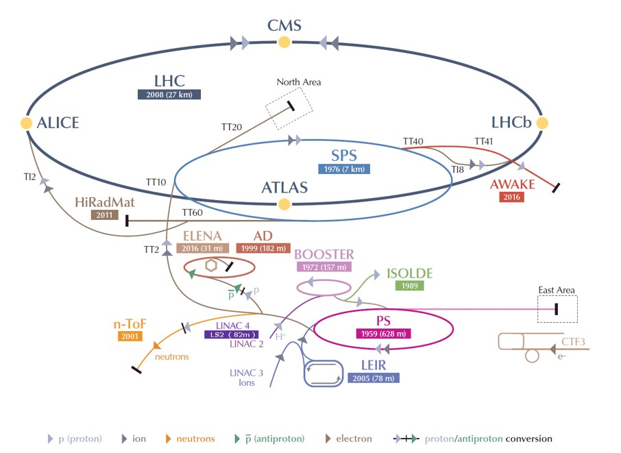
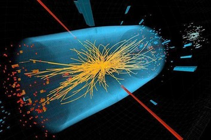
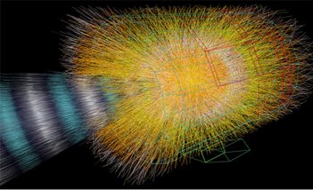
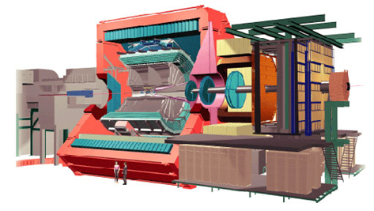
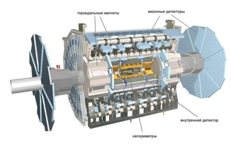
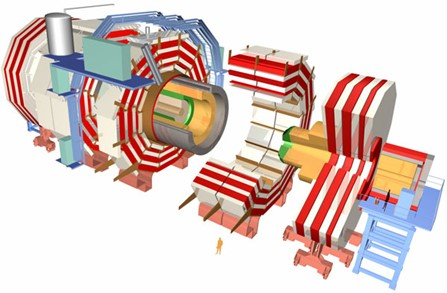
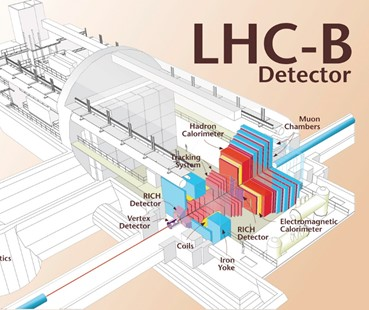
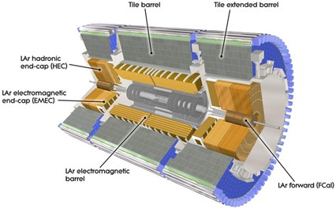

Large Hadron Collider
Introduction

The Large Hadron Collider (LHC) is the world's largest particle accelerator, built at the European Organization for Nuclear Research (CERN) near Geneva, Switzerland, between 1998 and 2008.
Financed and developed by scientists from over 100 countries worldwide, more than 10,000 scientists and engineers participate in these research efforts.
The accelerator is housed in a tunnel (shaped like a torus with a circumference of 27 kilometers) at depths of up to 175 meters underground on the border between France and Switzerland, near Geneva, Switzerland. The first collisions were achieved in 2010 with an energy of 3.5 teraelectronvolts (TeV) per beam, approximately four times the previous world record. After the 2015 upgrade, an energy of 6.5 TeV per beam was achieved (13 TeV total collision energy, the current world record).
The size of the accelerator is related to the maximum energy that can be achieved. In the case of a collider, it is also a function of the machine's radius and the strength of the magnetic field that keeps the particles on their orbits. The LHC reuses the 27-kilometer tunnel that was built for the previous large accelerator, the LEP. The tunnel, magnets, cavities, and other key elements of the machine are the main limitations that determine the design energy of 7 TeV per proton beam.
The LHC accelerates two beams of particles of the same kind, either protons or lead ions, which are hadrons. The accelerator can only accelerate certain types of particles: first, they must be charged (since beams are controlled by electromagnetic devices that can only affect charged particles), and second, except for special cases, they must be stable. This limits the number of particles that can practically be accelerated to electrons, protons, and ions, as well as to all their antiparticles.
In a circular accelerator like the LHC, heavy particles such as protons (protons are about 2000 times heavier than electrons) have much smaller energy losses per revolution due to synchrotron radiation than light particles such as electrons. Therefore, in circular accelerators, it is more efficient to accelerate massive particles to achieve collisions with the highest energy.
History of construction
The project was conceived in 1984, and its implementation began in 2001. The construction of the LHC utilized an existing tunnel, which until the year 2000 housed the Large Electron-Positron Collider (LEP).
In 1998, four experiments - ALICE, ATLAS, CMS, and LHCb - received official approval, and construction work began at four sites. Since then, three smaller experiments (TOTEM, LHCf, and MoEDAL) have joined the search: TOTEM, located next to CMS, LHCf, next to ATLAS, and MoEDAL deployed in the same intersection area as the LHCb detector.
On November 19, 2006, the construction of a special cryogenic line for magnet cooling was completed.
The first beam injection occurred on September 10, 2008, with particles at an energy of 450 gigaelectronvolts (GeV) circulated around the entire LHC ring.
On March 30, 2010, the Large Hadron Collider successfully achieved proton-proton collisions at speeds approaching the speed of light.
Prehistory:
On April 5, 1976, the first proton beams were injected into the new 7-kilometer accelerator at CERN - the Super Proton Synchrotron (SPS). Protons were accelerated in it to a record energy of 400 GeV and directed towards stationary targets. The SPS continued to operate successfully during the LEP era and even into the 21st century.
On July 18, 1977, the first project of the Large Electron-Positron Collider (LEP) at CERN was published, which would be installed in a special circular tunnel almost 30 km long. At that time, the idea was also expressed that in the future, an hadron collider could be installed in the same tunnel, which perhaps would operate simultaneously with LEP. Therefore, the tunnel for LEP was designed with this possibility in mind.
Work on the development of magnets began in 1981. Development of magnets for the LHC - the basis of the future collider - began. The magnets were supposed to maintain a field of about 10 Tesla, which means they had to be made superconducting, but they also had to fit in the space of the underground tunnel. The main focus was on the "two in one" configuration (two separate vacuum tubes for counter-propagating proton beams, placed in a single cryostat), but other options were also considered. The "two-in-one" configuration later became the emblem of the LHC.
The 27-kilometer tunnel was excavated from January 1983 to January 1988.
For 5 years, excavation work was carried out at CERN to lay the circular 27-kilometer tunnel. It will house the Large Electron-Positron Collider (LEP), and after its completion, in the 2000s, the Large Hadron Collider will be assembled in the same tunnel. Tunneling became the largest excavation project in Europe at the time (the record was broken in 1988 when work began on excavating an underground tunnel under the English Channel). The cost of this work accounted for more than half of the entire LEP budget.
On July 14, 1987, CERN launched the LAA project, the task of which was to develop general principles for designing detectors for the future hadron collider.
Purpose and goals of the LHC construction
The main objective of the Large Hadron Collider is to reliably detect any deviations from the set of theories that constitute the current understanding of fundamental particles and interactions. Despite its advantages, it also faces difficulties: it does not account for gravitational interaction, nor does it explain the existence of dark matter and dark energy. The collider is expected to help answer these questions.
One way to unify the laws of all fundamental interactions within a single theory is the hypothesis of "supersymmetry," which predicts the existence of a heavier partner for each known elementary particle. Theories based on this hypothesis are among the most popular in the field of "New Physics" (in particular, supersymmetric particles are considered candidates for the role of hypothetical dark matter particles), and the search for experimental evidence of it is one of the main tasks of the LHC.
An important step towards a more comprehensive theory than the Standard Model is the study of the Higgs mechanism of electroweak symmetry breaking. It is most conveniently investigated through the discovery and study of the Higgs boson. It is a quantum of the so-called Higgs field, through which particles acquire their mass. The existence of the Higgs boson was predicted in 1964, and its discovery became one of the main goals of the LHC project. After the long-awaited announcement of the discovery of this particle in 2012, the scientific program of the LHC includes numerous tasks related to the thorough study of its properties.
Cosmological and astrophysical observations have shown that only about 5% of the mass-energy of the Universe is accounted for by visible matter. The search continues for particles or phenomena responsible for dark matter (27%) and dark energy (68%). A very popular idea is that dark matter consists of neutral, as yet undiscovered, supersymmetric particles.
Studying the quark-gluon plasma.
In addition to proton-proton collisions, the LHC work program also includes collisions of heavy ions.
When two ultrarelativistic nuclei collide, a dense and very hot nugget of nuclear matter - the quark-gluon plasma - is formed and then decays. Understanding the phenomena that occur during the transition to this state, in which matter existed in the early Universe, and its subsequent cooling, when quarks become confined, is necessary for the construction of a more advanced theory of strong interactions, useful for both nuclear physics and astrophysics.
Studying photon-hadron and photon-photon collisions.
Research on antimatter and investigations of T-quarks.
Studying dark energy - a form of energy associated with vacuum in space, which constitutes about 70% of the Universe. It is evenly distributed throughout space and time, meaning its influence does not diminish with the expansion of the Universe. Its uniform distribution means that dark energy does not have local gravitational effects but has a global impact on the Universe as a whole. This leads to the emergence of a repulsive force, which accelerates the expansion of the Universe. Experimental measurements of the rate of expansion and its acceleration, along with other scientific data, have confirmed the existence of dark energy and have been used to estimate its quantity.
A collider, where colliding beams are used, has a significant advantage over other types of accelerators where a beam collides with a stationary target. When two beam bunches collide, the collision energy is the sum of the energies of the two beams. A beam with the same energy, hitting a fixed target, would result in a collision with much less energy.
The available energy in both cases is the energy of the center of mass. In the first case, it is simply the sum of the energies of the two colliding particles (E = E_beam1 + E_beam2), while in the second case, it is proportional to the square root of the energy of the particle hitting the target (E ∝ √E_beam).
Construction of the LHC
The accelerator complex at CERN is a sequence of machines with increasingly higher energies. Each machine injects a beam into the next one, which takes on the task of raising the beam to even higher energies, and so on. In the Large Hadron Collider (LHC) - the last element of this chain - each beam of particles is accelerated to a record energy of 6.5 TeV. Additionally, most other accelerators in the network have their own experimental halls, where their beams are used for experiments at lower energies.
The process of proton acceleration:
Hydrogen atoms are taken from a hydrogen bottle. Then, protons are obtained by stripping them from the atom. The protons are introduced into the PS Booster (PSB) with an energy of 50 MeV. The Booster accelerates them to 1.4 GeV and then they are fed into the Proton Synchrotron (PS), where they are accelerated to 25 GeV. Then the protons are sent to the Super Proton Synchrotron (SPS) where they are ramped up to 450 GeV. Eventually, they are transferred to the LHC (both clockwise and anticlockwise), where they are accelerated for 20 minutes to reach 6.5 TeV.
In addition to accelerating protons, the accelerator complex can also accelerate lead ions. Lead ions are produced from a highly purified sample of lead heated to a temperature of about 800°C. The lead vapor is ionized by an electron beam. Various charge states are formed with a maximum around Pb29+. These ions are selected and accelerated to 4.2 MeV (energy per nucleon) before passing through a carbon foil, which separates most of them up to Pb54+. The Pb54+ beam is accumulated and then accelerated to 72 MeV in the Low Energy Ion Ring (LEIR) before being transferred to the PS. The PS accelerates the beam to 5.9 GeV and sends it to the SPS after initially passing it through a second foil, where it is fully stripped to Pb82+. The SPS accelerates it to 177 GeV, and then it is sent to the LHC, which accelerates it to 2.56 TeV.
The LHC is not a perfect circle. It consists of eight arcs and eight "insertions." The arcs contain dipole bending magnets, 154 in each arc. An insertion consists of a long straight section and two (one at each end) transition sections called "dispersion suppressors." The exact positioning of the straight section depends on the specific use of the insertion: physics (collision of beams in experiments), injection, beam dump, beam cleaning.
A sector is defined as the portion of the machine between two insertion points. The eight sectors are the working units of the LHC: magnet installation proceeds sector by sector, and hardware is commissioned sector by sector, with all sector dipoles connected in series and housed in a continuous cryostat. The powering of each sector is independent.
An octant starts in the middle of one arc and ends in the middle of the next, thus encompassing a complete insertion. Therefore, this description is more practical when considering the use of magnets for beam steering in collisions or through the injection, extraction, and cleaning sections.
In particle accelerators, particles circulate in a vacuum tube and are manipulated by electromagnetic devices: dipole magnets keep particles on nearly circular orbits, quadrupole magnets focus the beam, and accelerating cavities are electromagnetic resonators that accelerate particles and then maintain them at a constant energy, compensating for energy losses.
The LHC is equipped with 7 detectors, located in inter-sector regions. Two of them—ATLAS and CMS (Compact Muon Solenoid)—are large general-purpose detectors, designed for a variety of research but optimized for the search for the Higgs boson and physics beyond the Standard Model.
ALICE (A Large Ion Collider Experiment) is optimized for studying quark-gluon plasma and the laws of quantum chromodynamics in heavy-ion and proton collisions. LHCb (LHC beauty experiment) is the fourth-largest experiment and is optimized for studying CP symmetry and searching for physics beyond the Standard Model in the decays of hadrons containing c- and b-quarks.
ATLAS is one of the two detectors with a broad range of functions for new discoveries and answering old questions. ATLAS has a length of 46 meters, a diameter of 25 meters, and weighs approximately 7000 tons.
The experiment is the result of collaboration involving about 3000 physicists from over 175 institutions in 38 countries worldwide. The project was led by Peter Jenni for the first 15 years, Fabiola Gianotti between 2009 and 2013, and since 2013 it has been led by David Charlton.
ATLAS is one of the two experiments at the LHC associated with the discovery of a particle similar to the Higgs boson in July 2012.
CMS is a versatile detector that hunts for Higgs bosons and seeks to understand the nature of dark matter.
ALICE studies the "liquid" form of matter known as quark-gluon plasma, which existed immediately after the Big Bang.
LHCb examines the equal amounts of matter and antimatter released after the Big Bang. It seeks to answer the question: "What happened to the 'missing' antimatter?"
Each of the four main detectors has its own scientific collaboration, each consisting of over a thousand physicists and engineers from dozens of countries worldwide.
In addition to the four main experiments, each with its own collision point, there are additional smaller experiments located near one of the main detectors, using part of their infrastructure. These include TOTEM (located near CMS), LHCf (LHC forward experiment, located near ATLAS), MOEDAL (located near LHCb). An eighth experiment, FASER, is under construction. These smaller experiments have very narrow research scopes.
Vacuum in the LHC: One of the peculiarities of the LHC is the presence of not one, but three vacuum systems:
- Isolation vacuum for cryomagnets
- Isolation vacuum for the helium distribution line
- Beam vacuum
The pressure of the beam vacuum is 10^-13 atm (ultrahigh vacuum) to avoid collisions with gas molecules. The largest volume that needs to be evacuated in the VAC is the insulation vacuum for cryomagnets.
Magnets: The VAC has a wide variety of magnets, including dipoles, quadrupoles, sextupoles, octupoles, decapoles, etc., totaling approximately 9600 magnets. Each type of magnet contributes to optimizing the particle trajectory. Most correction magnets are built into the cold mass of the main dipoles and quadrupoles. VAC magnets have either a double aperture (e.g., main dipoles) or a single aperture (e.g., some of the end-focusing triple quadrupoles). Insertion quadrupoles are special magnets used to focus the beam to the smallest possible size at collision points, thereby maximizing the likelihood of two protons colliding head-on with each other. The largest magnets are the 1232 dipoles.
Cavities: The primary role of VAC cavities is to keep the beams of 2808 protons tightly bunched to ensure high luminosity at collision points and maximize the number of collisions. They also transmit radiofrequency energy to the beam during acceleration to maximum energy. Superconducting cavities with low energy loss and high energy storage are the best solution. VAC uses eight cavities per beam, each providing 2 MV (accelerating field 5 MV/m) at 400 MHz. The cavities operate at a temperature of 4.5 K (-268.7°C) (VAC magnets use superfluid helium at 1.9 K or -271.3°C). For the VAC, they are grouped in sets of four in a cryomodule, with two cryomodules per beam, installed in the long straight section of the machine, where the interbeam separation distance is increased from the usual 195 mm to 420 mm.
Dipoles: VAC dipoles are special for several reasons. Firstly, they pose a significant technological challenge for VAC design. In a proton accelerator like the VAC, the maximum achievable energy is directly related to the intensity of the dipole field, considering a certain acceleration cycle. VAC dipoles are superconducting electromagnets critical for providing the necessary high field intensity of 8.3 T throughout their length.
The use of niobium-titanium (NbTi) superconducting cables in VAC dipoles is another distinctive feature. These cables become superconducting at temperatures below 10 K (-263.2°C), allowing them to conduct electricity without resistance. The VAC operates at an extremely low temperature of 1.9 K (-271.3°C), even lower than the temperature of outer space (2.7 K, -270.5°C). A current of 11,850 A flows through the dipoles, creating a high magnetic field of 8.33 T, necessary for bending beams with an energy of 7 TeV around the 27-kilometer VAC ring.
This emphasis on superconductivity is crucial, as the operation of magnets at a higher temperature, such as 4.5 K (-268.7°C), would limit the current they can withstand to approximately 8500 A, creating a magnetic field of approximately 6 T. The temperature of 1.9 K (-271.3°C) is achieved by injecting superfluid helium into the magnet systems. Each dipole has a length of 15 m and weighs approximately 35 tons.
VAC magnetic coils: wound on a cable consisting of 36 twisted 15-millimeter strands, each of which, in turn, consists of 6000-9000 individual threads, each with a diameter of only 7 micrometers.
The VAC cryogenic system is the largest cryogenic system in the world and one of the coldest places on Earth. Such low temperatures are necessary for the operation of magnets that keep protons on course (see the question: "What's so special about VAC dipoles?"). To maintain the 27-kilometer ring (4700 tons of material in each of the eight sectors) at the temperature of superfluid helium (1.9 K, -271.3°C), the VAC cryogenic system must provide unprecedented overall cooling power - about 150 kW for refrigerators at 4.5 K and 20 kW for refrigerators at 1.9 K. The cooling system scheme is based on five "cryogenic islands." Each "island" must distribute the refrigerant and carry kilowatts of cooling power over a long distance. The entire cooling process takes several weeks.
The first phase unfolds in two stages: first, helium is cooled in refrigerator heat exchangers to 80 K, using about 10,000 tons of liquid nitrogen. Then the refrigerator turbines lower the temperature of the helium to 4.5 K (-268.7ºC), making it ready for injection into the cold mass of magnets. After filling the magnets, the refrigeration units lower the temperature to 1.9 K (-271.3ºC).
Overall, about 120 tons of helium are needed, of which approximately 90 tons are allocated for magnets, and the rest is distributed among pipes and refrigeration units. It is noteworthy that the protocol avoids direct injection of liquid nitrogen into the VAC to prevent any potential asphyxiation hazard in the underground tunnel.
The choice of operating temperature for the VAC is also linked to the "super" properties of helium, as well as the properties of the niobium-titanium superconducting alloy in the magnet coils. At atmospheric pressure, helium gas liquefies at a temperature of about 4.2 K (-269.0 °C), but with further cooling, it undergoes a second phase transition at a temperature of about 2.17 K (-271.0 °C) to a "superfluid" state. Among many excellent properties, superfluid helium has very high thermal conductivity, making it the best coolant for cooling and stabilizing large superconducting systems.
Overall, the VAC cryogenic system requires about 40,000 sealed pipe joints, and 120 tons of helium are needed for the VAC machine to maintain the magnet operating temperature at 1.9 K. During normal operation, most of the helium circulates in closed refrigeration circuits. Nevertheless, a certain percentage of reserves are lost annually due to facility shutdowns, leaks into the atmosphere, conditioning of installations, and operational issues.
Protons in the VAC circulate around the ring in well-defined bunches. The beam structure of a modern accelerator is a direct consequence of the radiofrequency acceleration scheme. Protons can only be accelerated when the radiofrequency field has the correct orientation as particles pass through the accelerating cavity, which occurs at precisely defined moments during the radiofrequency cycle. In the VAC, under nominal operating conditions, each proton bunch consists of 2808 bunches, each containing about 10^11 protons.
The size of the bunch is not constant throughout the ring. Each bunch, as it circulates around the VAC, compresses and expands - for example, it maximally compresses around interaction points to increase the probability of collision. When particles are far from the collision point, their dimensions are several centimeters in length and millimeters in width. However, as they approach the collision points, they compress to approximately 20 mm (the thickness of human hair is about 50 mm) to increase the probability of proton-proton collisions. Increasing the number of bunches is one way to increase the luminosity in the machine. At full luminosity, the VAC uses a 7.5 m beam spacing between bunches.
The 7.5 m interval between bunches corresponds to a frequency of 40 MHz, which means that the bunches must pass through each of the collision points in the VAC 40 million times per second. However, for practical reasons, there are several larger intervals in the beam structure that give time, for example, for kicker magnets to operate to inject or dump bunches. The average bunch crossing frequency in the VAC is about 30 MHz.
Each beam consists of nearly 3000 particle bunches, and each bunch contains up to 100 billion particles. The particles are so small that the probability of collision between any two particles is very low. When beams intersect, up to 40 collisions occur between 200 billion particles. Beams intersect on average about 30 million times per second, so the VAC generates approximately 1 billion particle collisions per second.
The beam can circulate for over 10 hours, covering over 10 billion kilometers - enough to reach the planet Neptune and back. At speeds close to the speed of light, a proton in the VAC makes 11,245 laps per second.
The energy consumption of the VAC is about 120 MW (230 MW for the entire CERN), which corresponds to approximately 1/3 of the energy consumption of households in the canton (state) of Geneva. CERN's annual energy consumption is about 1.3 TWh (2015). This includes the base load on-site and experiments. The total annual operational cost of the VAC is about 19 million euros. CERN is mainly supplied by the French company EDF (Swiss companies EOS and SIG are only used in case of shortage from France).
A significant portion of the electricity consumed by the VAC goes to maintaining the superconducting magnet system at operating temperatures (1.8 and 4.2 K) depending on the magnets. Thanks to the superconducting technology used for its magnets, the nominal consumption of the VAC is not much higher than that of the Super Proton Synchrotron (SPS), although the VAC is much larger in size and has higher energy.
| Diameter of the circumference | 26,659 m |
| Operating temperature of the dipole | 1.9 K (-271.3°C) |
| Number of magnets | 9593 |
| Number of main dipoles | 1232 |
| Number of main quadrupoles | 392 |
| Number of radiofrequency cavities | 8 in each direction |
| Proton energy | 6.5 TeV (practically 7 TeV) |
| Ion energy | 2.56 TeV/u (Energy per nucleon) |
| Peak magnetic dipole field | 7.74 T |
| Beam spacing | ~7.5 m |
| Luminosity (protons) | ~7.5 m |
| Number of bunches per proton bunch (calculated value) | ~1.2 x 1034 cm-2 s-1 |
| Number of protons per bunch (at startup) | 1.2 x 1011 |
| Number of revolutions per second | 11,245 |
| Number of collisions per second | 1 billion |
Detectors:
ALICE - is a detector specializing in measuring and analyzing collisions between lead and ions. It studies the properties of quark-gluon plasma - a state of matter in which quarks and gluons are no longer confined inside hadrons under conditions of very high temperature and density. Such a state of matter likely existed immediately after the Big Bang, before particles like protons and neutrons were formed. The international collaboration comprises over 1800 participants from 174 institutes in 42 countries worldwide.
| Size | 26m in length, 16m in height, 16m in width |
| Weight | 10,000 tons |
| Location | Cessy, France |
ATLAS - is a detector designed to cover a wide range of physical research at the LHC, from precise measurements of the Higgs boson to searches for new physics beyond the Standard Model. Its main feature is its huge toroidal magnet system. It consists of eight 25-meter-long superconducting magnet coils arranged in a cylinder around the central detector tube. ATLAS is the largest-volume collider detector ever constructed. Nearly 3000 scientific authors from 182 institutions in 38 countries are involved in its operation.
| Size | 46m in length, 26m in height, 26m in width |
| Weight | 7,000 tons |
| Location | Meyrin, Switzerland |
CMS - is a general-purpose detector with similar physics goals to ATLAS but with different technical solutions and construction. It is built around a massive superconducting solenoid. It takes the form of a cylindrical coil of superconducting cable that generates a magnetic field of 4 T. Over 3500 scientists, engineers, and students from 201 institutions in 36 countries are involved in the operation of CMS.
| Розмір | 21м в довжину, 15м в висоту, 15м в ширину |
| Вага | 7000 тон |
| Місце розташування | Мейрин, Швейцарія |
LHCb спеціалізується на вивченні незначної асиметрії між речовиною та антиречовиною, яка присутня у взаємодіях B-частинок (частинок, що містять b-кварк). Розуміння цього явища має стати неоціненним для відповіді на питання: "Чому наш Всесвіт складається з матерії, яку ми спостерігаємо?". Експеримент LHCb використовує серію субдетекторів для виявлення і вимірювання розпаду частинок, що утворюються в одному з напрямків пучка. Перший субдетектор будується навколо точки зіткнення, за ним слідує послідовність інших субдетекторів уздовж лінії пучка на довжині 20 м. У колаборації LHCb беруть участь понад 1200 учасників з 71 інституту з 16 країн.
| Size | 21m in length, 10m in height, 13m in width |
| Weight | 5600 tons |
| Location | Ferney-Voltaire, France |
LHCf is a small experiment that measures particles produced very close to the beam direction in proton-proton and proton-nucleus collisions at the LHC. The motivation is to test models used to estimate the primary energy of ultra-high-energy cosmic rays. The detectors are located at a distance of 140 meters from the ATLAS collision point. The collaboration involves about 30 members from 14 institutions in 4 countries.
| Size | Two detectors, each 30cm in length, 60cm in height, 10cm in width |
| Weight | 40kg each |
| Location | Meyrin, Switzerland (near ATLAS) |
MOEDAL (MOnopole and Exotics Detector At the LHC) is a small experiment searching for hypothetical highly ionizing particles, such as magnetic monopoles. The detector consists of an array of 400 nuclear track detectors, each comprising a stack of 10 sheets of plastic scintillator with a total area of 250 square meters, positioned around the collision point near the center of the LHCb detector. MOEDAL involves 16 members from 15 institutions in 7 countries.
| Size | 70 boxes measuring 0.5m x 0.75m each |
| Weight | 500 kg |
| Location | Ferney-Voltaire, France (near LHCb) |
TOTEM measures the effective size or "cross-section" of protons in the LHC. To do this, TOTEM must be able to detect particles produced very close to the LHC beams. This requires detectors placed in specially designed vacuum chambers, known as "Roman pots," which are connected to the LHC beam pipes. Twenty-six Roman pots are placed in pairs at four locations near the collision point in the CMS experiment. TOTEM involves over 160 members from 11 institutions in 8 countries.
| Size | 8 sensors distributed over 440m |
| Weight | 20 tons |
| Location | Sezegnin, France (near CMS) |
Modern general-purpose high-energy physics detectors, such as ATLAS or CMS, must be hermetic to ensure that there is only a small probability of a particle (that could be detected) passing unnoticed through an uninstrumented region. For engineering convenience, most modern detectors at particle colliders, such as the LHC, have a "barrel plus endcap" design, where a cylindrical detector covers the central region, and two flat circular "endcaps" cover the regions close to the beam (forward region). ALICE and LHCb have asymmetric shapes as they focus on more specific areas of physics.
What are the main components of a detector?
The goal of large detectors installed at particle colliders, like the LHC, is to identify secondary particles produced in collisions and measure their positions in space, charges, velocities, masses, and energies. To achieve this, detectors have multiple layers or "subdetectors," each playing a specific role in reconstructing collisions. Completing the structure is the magnet system. Its function is to separate different particles according to their charges and allow their momentum to be measured – a physical quantity related to the particle's mass and velocity.
Tracking devices detect tracks of electrically charged particles by the traces they leave, ionizing matter. In a magnetic field, they can be used to measure the curvature of the particle's trajectory and thus its momentum. This can aid in particle identification. Most modern tracking devices do not make tracks directly visible. Instead, they produce electrical signals that can be recorded. A computer program reconstructs patterns of recorded tracks.
Two specialized types of tracking devices are vertex detectors and muon chambers. Vertex detectors are located close to the interaction point (primary vertex); muon chambers are situated in the outer layers of the detector, as muons – the only charged particles capable of passing through meters of dense material.
There are two main methods for constructing tracking devices:
- Gaseous detectors: In this method, the ionized medium is gas, and ions or electrons are collected on electrodes, usually in the form of wires or pads under a strong electric field. In drift chambers, the position of the track is determined by measuring the time it takes for electrons to reach the anode wire, measured from the moment the charged particle passes. This leads to higher spatial resolution for wider wire spacing; drift chambers typically have several centimeters in diameter, giving a spatial resolution of 50-100 mm. In a time projection chamber, the drift volume is much larger, up to 2 m or more, and sensitive wires are located on a single endcap.
- Semiconductor detectors: In this method, a particle generates electrons and holes as it passes through a reverse-biased semiconductor, usually silicon. Devices are divided into strips or pixels, and the typical resolution is 10 mm.
Calorimeters are devices designed to measure the energy of particles by stopping them and measuring the amount of energy released. There are two main types of calorimeters: electromagnetic (ECAL) and hadronic (HCAL). They use different materials depending on their purpose. ECAL typically fully absorbs electrons and photons, which interact via the electromagnetic force. Strongly interacting particles (hadrons) such as protons and pions start losing energy in ECAL but will only be stopped in HCAL. Muons (and neutrinos) will pass through both layers. Calorimeters allow for the identification of neutral particles such as photons and neutrons. Although these particles are not visible in tracking devices, they can be detected based on the energy they deposit in calorimeters.
Calorimeters typically consist of layers of "passive" or "absorbing" high-density material, such as lead, interleaved with layers of "active" medium, such as plastic scintillators or liquid argon.
Detectors also often have subdetectors that measure the velocity of charged particles, which is an important factor for particle identification.
There are two important methods for measuring the velocity of particles:
- Cherenkov radiation: When a charged particle traverses a medium with a certain velocity, it emits photons at a specific angle that depends on the velocity. Combined with measuring the particle's momentum, the velocity can be used to determine the mass and thus identify the particle. Cherenkov radiation occurs when the particle moves faster than the speed of light in the medium.
- Transition radiation: When a relativistic charged particle crosses an inhomogeneous medium, especially the boundary between materials with different electrical properties, it emits radiation more or less proportionally to its energy. This allows distinguishing between types of particles.
Future of the LHC
The Future Circular Collider (FCC) research is developing projects for a new research infrastructure to accommodate the next generation of more productive particle colliders, aiming to expand the research currently conducted at the LHC, as the High-Luminosity LHC (HL-LHC) phase is expected to reach completion around 2040.
The goal of the FCC is to push the boundaries of energy and intensity of particle colliders to achieve collision energies of 100 TeV in the quest for new physics.
International collaboration involving over 150 universities, research institutes, and industrial partners from around the world is developing possibilities for circular colliders, new detectors, corresponding infrastructure, cost assessments, global implementation scenarios, as well as relevant international management structures.
The FCC considers scenarios for three different types of particle collisions: hadronic (proton-proton and heavy-ion) collisions, like at the LHC (FCC-hh), electron-positron collisions (FCC-ee), as in the former LEP. Other options include proton-electron collisions or collisions of proton-heavy ion.
Currently, scientists are conducting physics and detector research for each scenario. Concurrently, specialized expert groups are conducting in-depth analysis of infrastructure, operational concepts, and necessary key technologies.
A conceptual design report of the FCC was submitted as a contribution to the update of the European Strategy for Particle Physics in 2020. Following the adoption of this update by the CERN Council in 2020, CERN was mandated to carry out the technical and financial justification for the FCC, in preparation for the next strategy update scheduled for 2027.